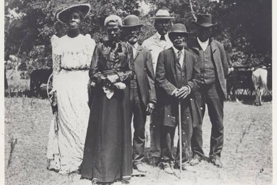

Juneteenth: The Meaning of Freedom
“The arc of the moral universe is long, but it bends toward justice.”
— Dr. Martin Luther King Jr.
Juneteenth was celebrated just yesterday as of the time this article was published. It was officially made a U.S. federal holiday five years ago in 2021. Since then, it has been a truly beautiful celebration of freedom and unity in the United States. However it is always important to understand the true importance of the day. On January 1, 1863, Abraham Lincoln signed the Emancipation Proclamation. This order stated all enslaved persons in the Confederate states still in rebellion to be free. It was a pivotal event that shifted the Civil War from a conflict to a fight for human liberation. However, freedom did not reach everyone right away. That is where the story of Juneteenth comes in.

Two years pass, and the year becomes 1865. The Confederate states are severely conceding defeats. The Confederate Congress had officially adjourned and ceased to exist as a functional legislative body on March 18, 1865. And on April 9, 1865, General Robert E. Lee surrendered his army of Northern Virginia, officially marking the end of the Civil War. Slavery in the South had already been taking a major plummet following the Emancipation Proclamation, but the job was not done. Slavery in Texas had been remaining unabated, as it was geographically isolated and was home to minimal Union presence. Then, the day came. It was June 19, 1865, and Major General Gordon Granger had landed in Galveston, Texas. He read General Order No. 3 to the public, which officially declared to the enslaved people of Texas that they were free. It marked the day of freedom for more than 250,000 people. The great event finally finished what the Emancipation Proclamation had started.
In conclusion, Juneteenth isn’t just a celebration of freedom, but also a reminder that justice delayed is still injustice. It helps us to see that even today, the job isn’t truly complete. There continues to be a heartbreaking amount of hate and maltreatment. This calls us to be the difference, make the change, and to every day continue the goal of true justice for all. We should recognize that history is not remembered simply because it happened. It is remembered because it teaches us something. Juneteenth reminds us that freedom is not meaningful merely because it is declared, but because it is truly experienced. Stay golden, and remember to be the difference. Thank you for reading Social Science 43, and have a flawless day.
Comments Section
Share your thoughts here!